Manutenção
preventiva
Cuide do funcionamento dos seus equipamentos com manutenção planejada e atenção aos componentes.
Planejar manutenção ↗Quem trabalha com equipamentos sabe: cada detalhe faz diferença. A Hidrau Peres cuida da manutenção e instalação de equipamentos hidráulicos e pneumáticos para oficinas e concessionárias.
De um macaco hidráulico a uma rede pneumática, o cuidado começa em entender o que a sua operação precisa.
Converse sobre o seu equipamento ↗Da instalação à manutenção.
Conte com a Hidrau Peres.
Cuide do funcionamento dos seus equipamentos com manutenção planejada e atenção aos componentes.
Planejar manutenção ↗Seu equipamento apresentou uma falha? Fale com a gente para avaliar a necessidade de reparo.
Solicitar atendimento ↗Instalação de equipamentos hidráulicos e pneumáticos para oficinas e concessionárias.
Conversar sobre instalação ↗Soluções para os equipamentos
que fazem parte da sua rotina.
8 equipamentos encontrados
Nenhum equipamento encontrado. Tente outro nome ou tipo.
Registros dos nossos atendimentos.
Toque em uma foto para ampliar.
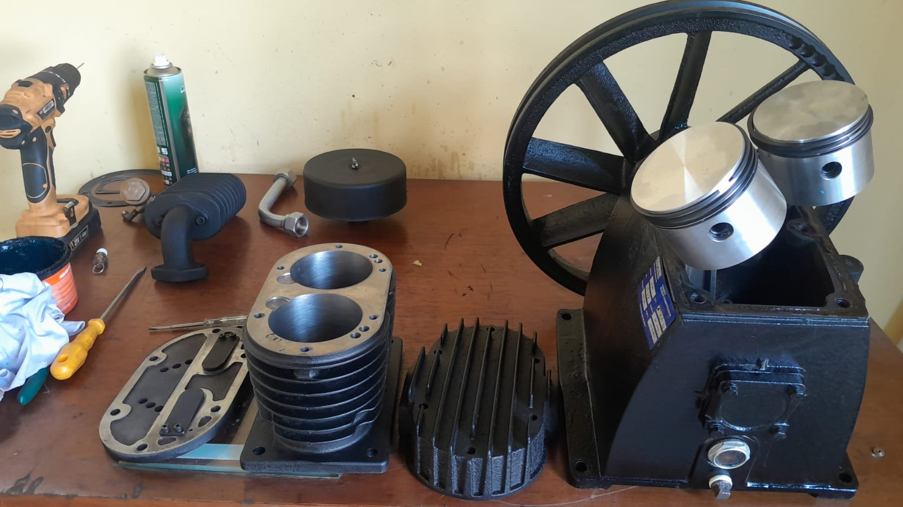
Componentes de compressor em manutenção ↗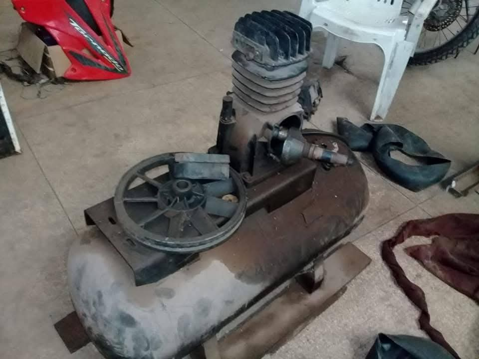
Compressor em manutenção ↗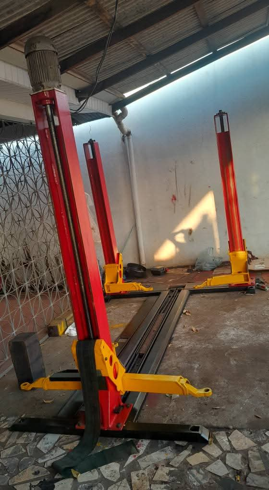
Elevador automotivo vermelho e amarelo ↗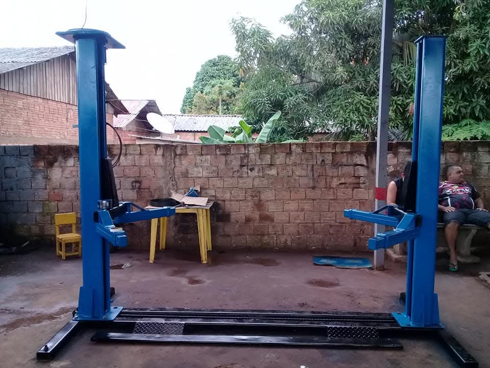
Elevador automotivo azul ↗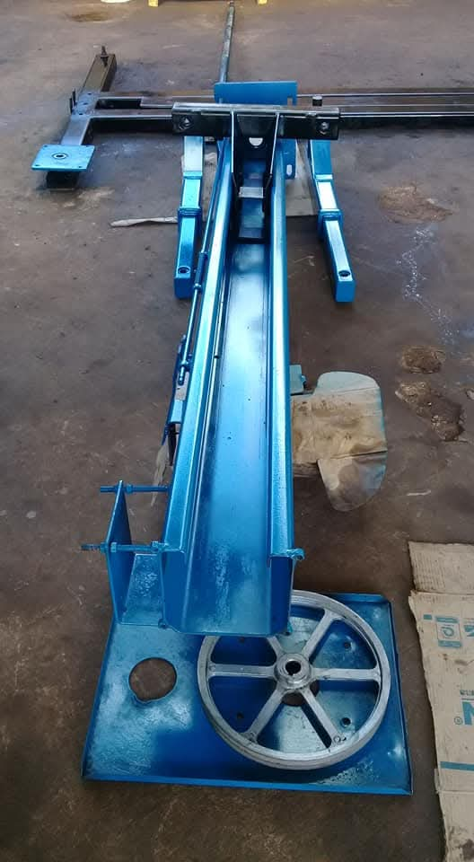
Componentes de elevador na bancada ↗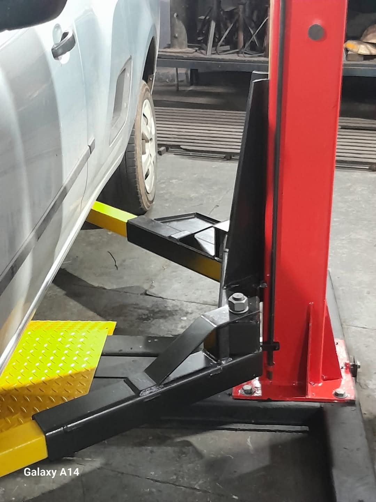
Detalhe de elevador automotivo ↗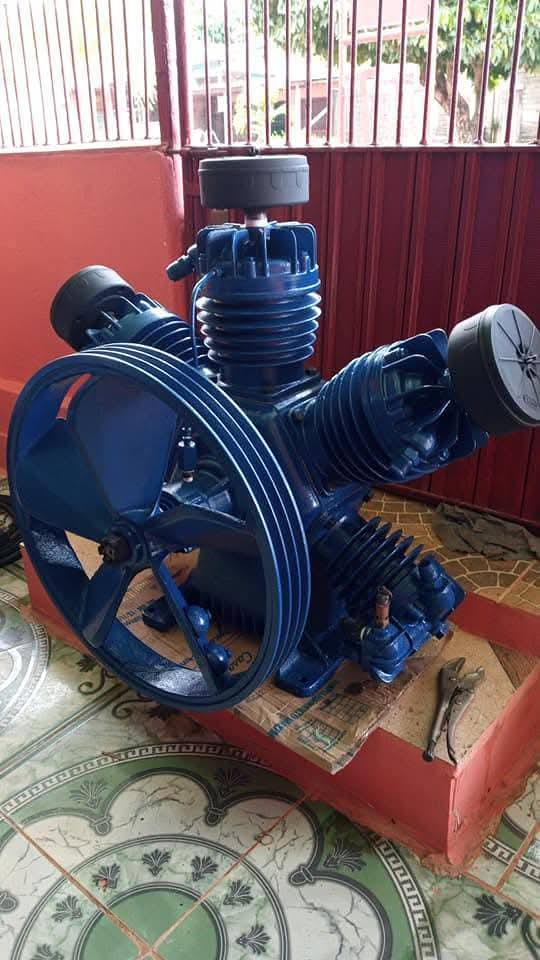
Conjunto de compressor de ar ↗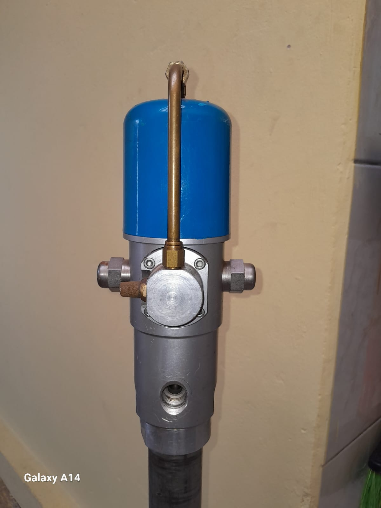
Componente de equipamento em manutenção ↗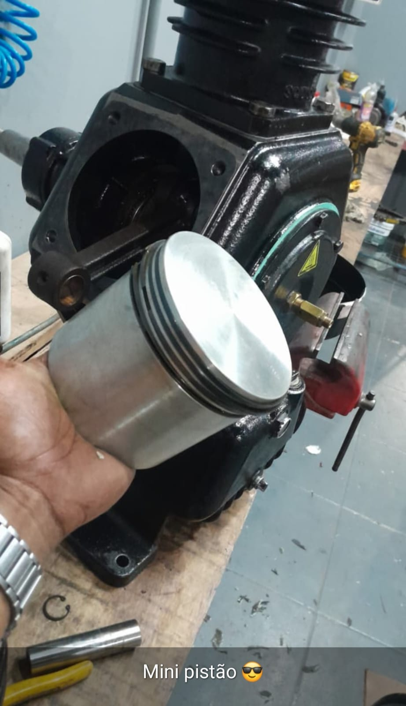
Pistão de compressor em manutenção ↗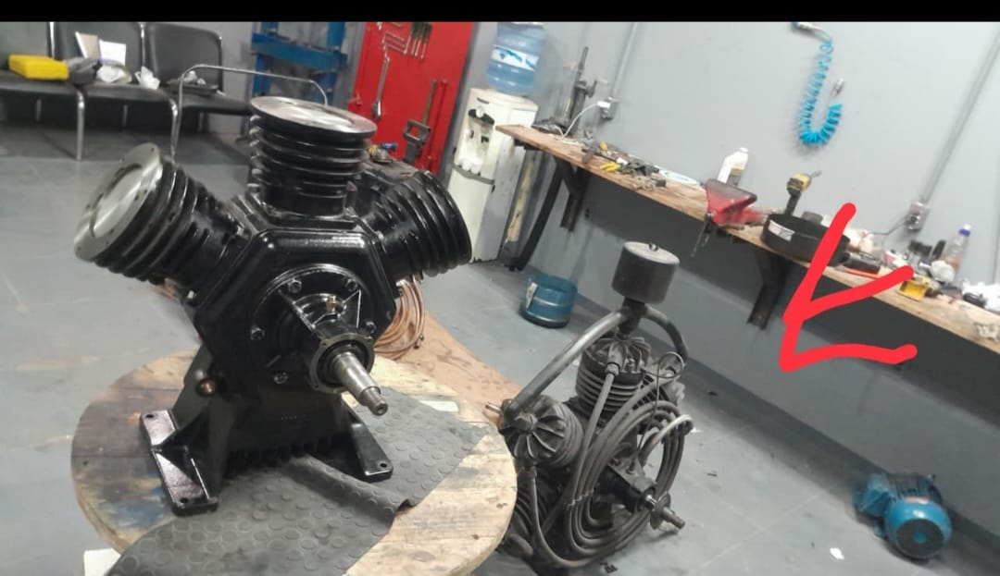
Compressores na bancada ↗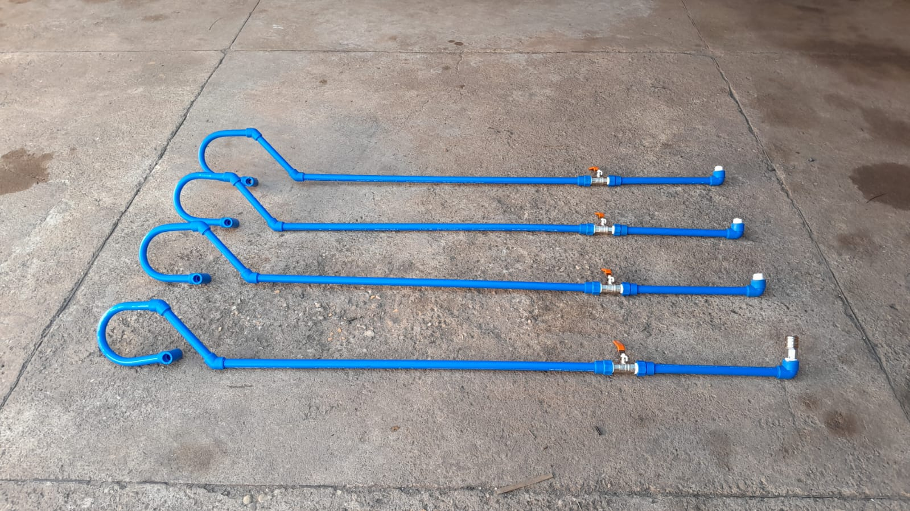
Tubulações para rede pneumática ↗ Instalação de rede pneumática em oficina ↗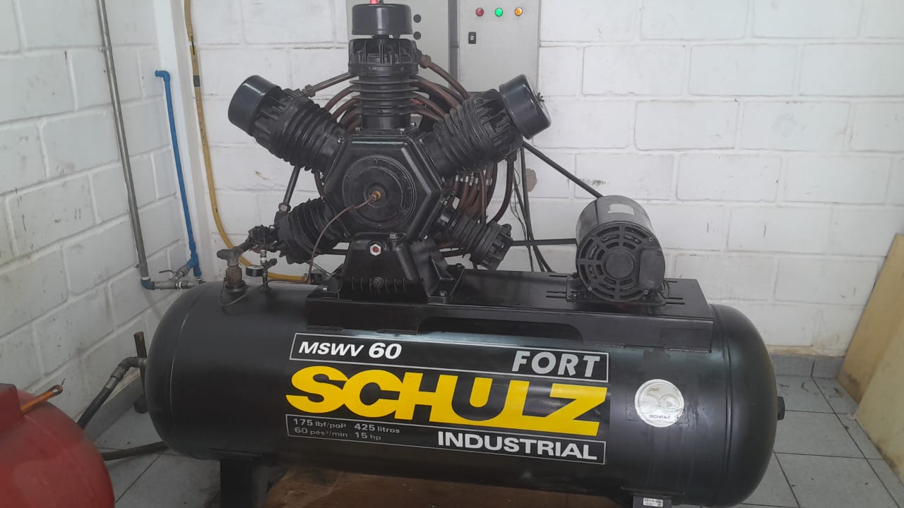
Compressor de ar industrial ↗ Manutenção de compressor industrial ↗ Atendimento em elevadores automotivos ↗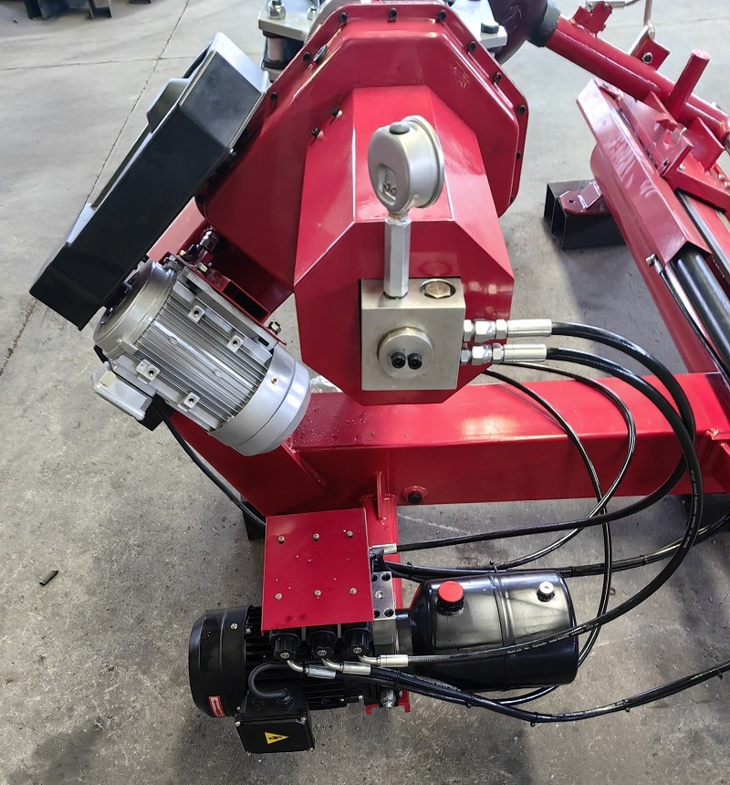
Conjunto hidráulico de equipamento ↗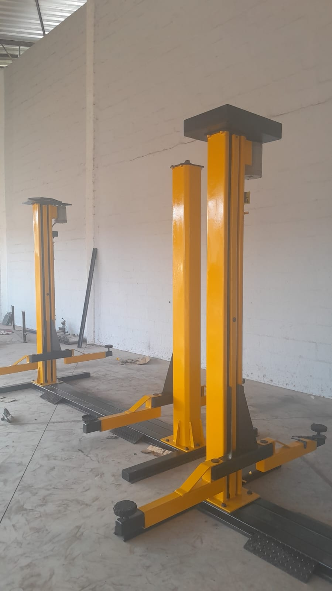
Elevador automotivo amarelo ↗Atendimento em oficinas e concessionárias.
Consulte a disponibilidade para a sua cidade.
Conte qual é o equipamento e o que você precisa.
A conversa começa pelo WhatsApp.